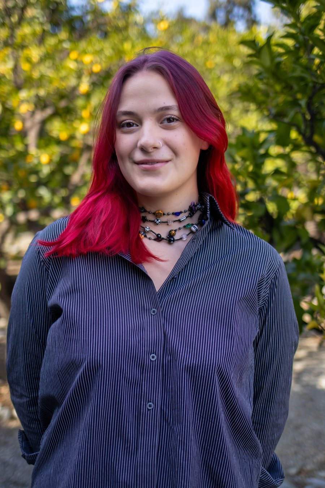

Constantly pursuing the question of how do the systems and structures that shape our lives and choices work and who do they work for? I compare what community members want, to what local leaders promise, to what is delivered. I want to show people how systems are supposed to work for them, and give them the tools they need to check.
I report for Signal Cleveland and have been a Cleveland Documenter since 2022, sitting in on the city council, school board, and county committee meetings where decisions get made. I've also reviewed more than almost 2,000 police disciplinary records and built them into a searchable public database. Last summer, I interviewed 75 residents about what they want from city officials. I learned that some of the most impactful news stories start in local Facebook groups and subreddits.
I also explore how technology can support quality journalism, using data to power community-focused stories and building custom javascript for creative layouts and design.
I'm always open to collaborating with newsrooms, community organizations, and anyone else working to make this city's systems easier to see. Reach me at eesedla@gmail.com.
